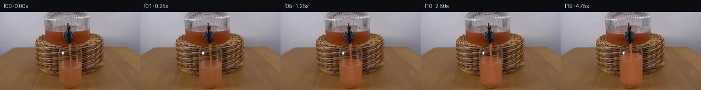

![首帧]()

Round 00
2026-11-05T02:54:36.255545+00:00像素候选变化代码 +270/−0inspection 更新
pixels 3350ee9e4baa1801 · code bcb165e538af56e0
查看本轮 generate.py 真实 diff
--- previous/generate.py
+++ current/generate.py
@@ -0,0 +1,270 @@
+"""Deterministic local pixel continuation of the supplied photograph.
+No network, learned model, external scene input, or rendering engine is used.
+"""
+from pathlib import Path
+import json
+import re
+import base64
+import numpy as np
+from PIL import Image, ImageDraw
+from artifact_io import save
+
+ROOT = Path(__file__).resolve().parent
+S = 4
+W, H, N = 256, 144, 20
+SOURCE = np.asarray(Image.open(ROOT / 'first_frame.png').convert('RGB'), dtype=np.uint8)
+assert SOURCE.shape == (H, W, 3)
+# Coordinates of subpixel samples within the native pixels.
+Y, X = np.mgrid[0:H*S, 0:W*S].astype(np.float64)
+X = (X + .5) / S - .5
+Y = (Y + .5) / S - .5
+
+
+def smooth(a, b, v):
+ q = np.clip((v-a)/(b-a), 0., 1.)
+ return q*q*(3.-2.*q)
+
+
+def sample(x, y):
+ x = np.clip(x, 0, W-1)
+ y = np.clip(y, 0, H-1)
+ x0 = np.floor(x).astype(int)
+ y0 = np.floor(y).astype(int)
+ x1 = np.minimum(x0+1, W-1)
+ y1 = np.minimum(y0+1, H-1)
+ fx, fy = (x-x0)[..., None], (y-y0)[..., None]
+ return ((1-fy)*((1-fx)*SOURCE[y0, x0]+fx*SOURCE[y0, x1])
+ + fy*((1-fx)*SOURCE[y1, x0]+fx*SOURCE[y1, x1]))
+
+
+BASE = sample(X, Y)
+# Glass highlights reflect the fixed room. Keep them independent of liquid motion.
+neutral = 1.-smooth(12., 34., BASE[..., 0]-BASE[..., 2])
+highlight = smooth(145., 218., BASE.mean(2))*neutral
+white_spot = np.exp(-((X-114.)/2.25)**6-((Y-75.5)/3.2)**6)
+protect = np.maximum(highlight, white_spot)
+wall = smooth(107.6, 110.0, X)*(1.-smooth(146.4, 149.1, X))
+bottom = 1.-smooth(129.0, 134.0, Y)
+
+
+def over(a, color, alpha):
+ return a*(1.-alpha[..., None]) + np.asarray(color)*alpha[..., None]
+
+
+def generate_frame(i):
+ if i == 0:
+ return SOURCE.copy(), {'frame': 0, 'time_seconds': 0., 'glass_surface_y': 97.,
+ 'reservoir_drop_pixels': 0., 'added_volume_units': 0.}
+ t = i/4.
+ rise = 15.*i/19.
+ level = 97.-rise
+ drop = rise*.25
+ out = BASE.copy()
+
+ # Translate only the dispenser's fluid boundary, using its photographed
+ # colors. This extends the existing clear section as liquid is withdrawn.
+ boundary_band = smooth(29., 34., Y)*(1.-smooth(44., 49., Y))
+ source_region = smooth(82.5, 87., X)*(1.-smooth(158., 163., X))
+ tap_keep = smooth(114., 117., X)*(1.-smooth(133., 136., X))
+ reservoir_mask = boundary_band*source_region*(1.-tap_keep)
+ reservoir = sample(X, Y-drop*boundary_band)
+ out += (reservoir-BASE)*reservoir_mask[..., None]
+
+ # Refract the photographed water upward as volume increases. Its initial
+ # elliptical surface and texture supply the new water surface. Stretch the
+ # water column below the surface while retaining the fixed bottom and walls.
+ u = (X-128.)/20.2
+ curve = np.sqrt(np.clip(1.-u*u, 0., 1.))
+ back = level-8.*curve
+ front = level+8.*curve
+ liquid_mask = wall*bottom*smooth(back-.65, back+.85, Y)
+ liquid_mask *= (1.-protect)
+ source_y = np.where(Y <= level+8., Y+rise,
+ 105.+(Y-level-8.)*29./(134.-level-8.))
+ # Weak, smooth, advected refraction in the liquid, never in solid walls.
+ wave = .13*np.sin((Y-level)*.33-t*2.7)*np.sin((X-128.)*.21+t*.8)
+ source_x = X+wave*smooth(front, front+4., Y)
+ wet_base = sample(source_x, source_y)
… diff truncated; 183 more lines …